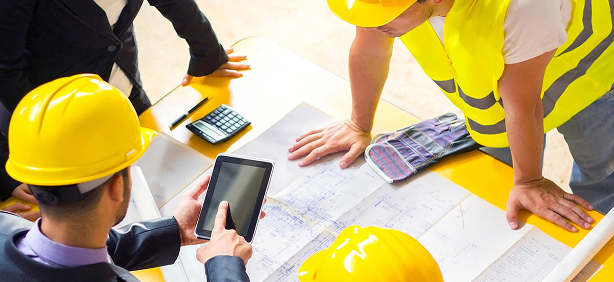

<div class="seccion_larga"><div class="titulo_sl"><div>Nuestros Servicios</div></div><hr><div class="row"><div class="col s8 m8 l8 offset-l2 offset-m2 offset-s2"><div class="descripcion_sl"><div>ARMe ofrece diversos servicios orientados a la industria <strong>Portuaria</strong>, <strong>Minera</strong>, <strong>Vial</strong>, <strong>Papelera</strong>, <strong>Energía</strong> e <strong>Hidráulica</strong>, tales como:</div></div></div></div><div class="contenido_sl"><div class="row"><div class="contenedor-flex"><div class="col s12 m12 l6"><ul class="lista-proyectos"><li style="margin-top: 0px">Estudios de Sitios</li><li>Ingeniería Conceptual</li><li>Ingeniería Básica</li><li>Ingeniería de Detalles</li><li>Administración de la construcción</li><li style="margin-bottom: 0px">Inspección Técnica</li></ul></div><div class="col s12 m6 l6"></div><div class="col s12 m6 l6"></div><div class="col s12 m12 l6"><ul class="lista-proyectos"><li style="margin-top: 0px">Peritaje de Siniestros</li><li>Owner Engineer</li><li>Manejo de Claims</li><li>Apoyo en procesos de licitación</li><li>Ingeniería Sísmica</li><li style="margin-bottom: 0px">Levantamiento de Infraestructuras</li></ul></div></div></div></div></div>